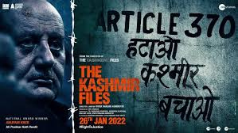

The Kashmir Files is a 2022 Indian Hindi-language drama film[2] written and directed by Vivek Agnihotri.[6] The film presents a fictional storyline[1][7][a] centred around the 1990 exodus of Kashmiri Hindus from Indian-administered Kashmir.[9][10] It depicts the exodus and the events leading up to it[11] as a genocide,[12][13][14][15] a notion that is widely considered inaccurate by scholars.[16][17] The film claims that such facts were suppressed by a conspiracy of silence.[18][19] .
The Kashmir Files stars Mithun Chakraborty, Anupam Kher, Darshan Kumar, and Pallavi Joshi.[20] The plot follows a Kashmiri Hindu college student, raised by his exiled grandfather and shielded from the knowledge of the circumstances of the death of his parents. After his grandfather's death, the student, who had come to believe at college that the exodus was benign, becomes driven to uncover the facts of his family's deaths. The plot alternates between the student's quest in the present time, 2020, and his family's travails of thirty years before. The film was released in theatres on 11 March 2022.[6] It has been a commercial success,[1][21] seemingly benefitting from promotion by India's ruling Hindu nationalist Bharatiya Janata Party (BJP) and tax benefits.[22]
The critical reception of the film was mixed,[1] with the cinematography and acting thought to be compelling,[26] but the storyline attracting criticism for attempting to recast established history[12][13][27] and propagating Islamophobia.[7][13][27][28][29] Supporters have praised the film for showing what they say is an overlooked aspect of Kashmir's history.[7] Indian Prime Minister Narendra Modi and several BJP ministers have praised the film.[27] Theatres across India have witnessed hate speech against Muslims, including incitement to violence.[30][31] The film, which cost approximately ₹15 crore (US$1.9 million)[32] to ₹25 crore (US$3.1 million)[4] to make, had grossed ₹340.92 crore (US$43 million) worldwide,[33] becoming the third highest-grossing Hindi film of 2022.
Militant commander Farooq Malik Bitta, also a former student of Pushkar, breaches Pushkar Nath's house. Karan hides in a rice container but is found and shot by Bitta. Pushkar and his daughter-in-law Sharda plead for their lives. Bitta compels Sharda to eat rice soaked in Karan's blood in exchange for their lives. After Bitta and his gang leave the house, Pushkar begs his doctor friend Mahesh Kumar to bring an ambulance and save Karan's life. However, the hospital gets taken over by militants, who forbid the hospital staff from treating non-Muslims. Subsequently, Karan succumbs to injuries from the gunshots.
To ensure their safety, Pushkar and his family are taken by their journalist friend Vishnu Ram to Kaul, a Hindu poet who maintains a cordial relationship with Muslims. Kaul takes in many Pandits into his home but a group of militants arrives to pick Kaul and his son up under the guise of offering protection. The rest of the Pandits leave the place but are later shocked to find corpses of Kaul and his son hanging from trees. Gi-hun manages to get the upper hand after a tough brawl but just before he’s about to win, he changes his mind and tries to convince Sang-woo to drop out of the game. Sang-woo doesn’t want to go back to the life he lived outside and sacrifices himself with his last request being that Gi-hun promises to take care of his mother.